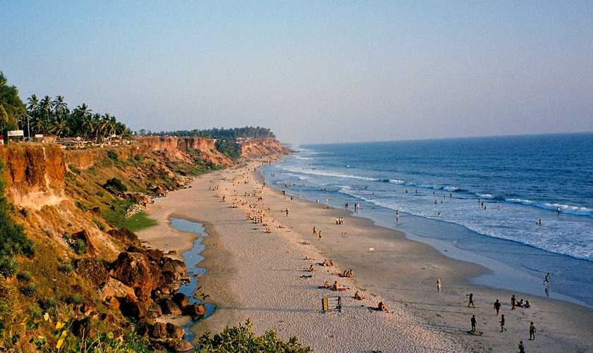
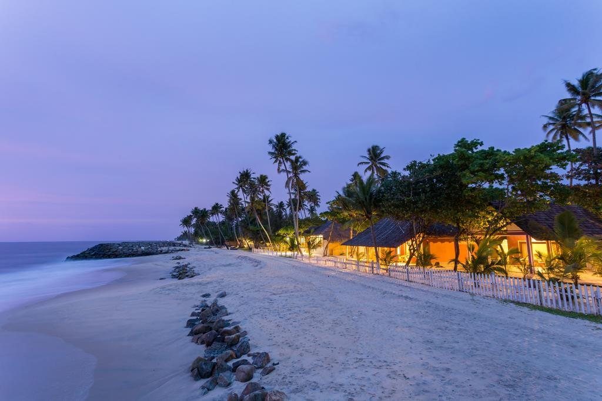
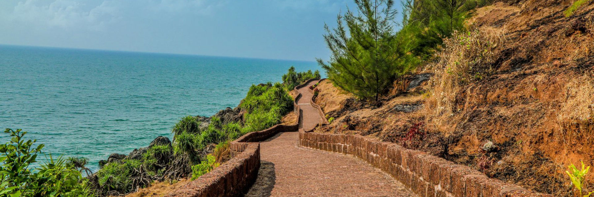
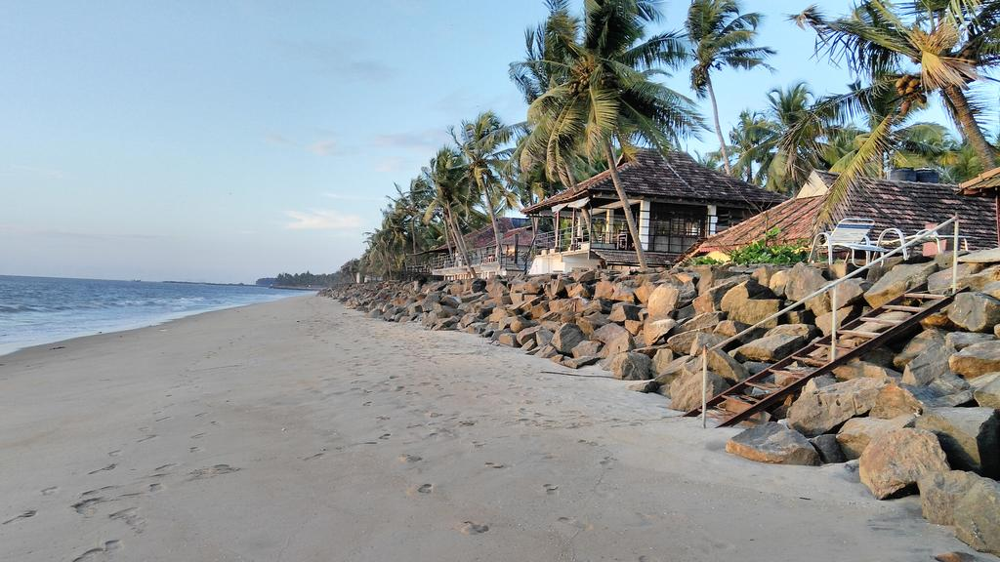

If you want action, you'll definitely find it at Kovalam Beach—the most popular and most developed beach in Kerala. Often likened to Goa's Calangute and Baga beaches, Kovalam is located not far from the capital, Trivandrum. It's actually made up of two main coves—Hawa (also referred to as Eve's Beach) and Lighthouse Beach. Lighthouse is the biggest and busiest of the two, with its promenade lined with open-air restaurants. Kovalam is a popular surfing destination in India. If you'd prefer somewhere a little more secluded, you'll find nearby Samudra Beach to be a better option.

Varkala Beach is the pick of the beaches in Kerala, in terms of ambiance and facilities. Although more and more tourists are flocking there every year, it's still less crowded than Kovalam and the scenery is striking. The beach lies at the bottom of a long stretch of cliff that's bordered by beach shacks and shops. You can stay right on the cliff, overlooking the ocean, or set back from it. It's incredibly romantic! Lots of young foreigners and couples enjoy this beach.

Quiet Marari Beach is located not far from Alappuzha (formerly Alleppey), making it convenient for those who'd like to spend some time at the beach in between going on a houseboat trip along the backwaters. A big attraction here is the earth-conscious Marari Beach Resort. It's set on a sprawling property filled with coconut groves and lotus ponds, and among other things offers Ayurveda treatments and yoga classes on the beach

Bekal Beach, in far North Kerala (around a 90-minute drive from Mangalore airport in Karnataka) is famous for its old fort—one of the largest forts in Kerala. The beaches are clean and unspoiled, but luxury hotels have already started moving into the area, making it the place for a pampered getaway. The most popular resort is the gorgeous Taj Vivanta. It's possible to stay there for around 9,000 rupees per night, depending on the season. The secluded LaLiT Resort and Spa Bekal is located on a private beach with backwaters running through it. However, it's more pricey. Room rates start at 19,000 rupees per night.

The 10-kilometer long Cherai Beach makes an appealing side trip from Kochi. It's located on Vypeen Island, which can be reached from Kochi by ferry and then a bus or auto rickshaw ride through the villages and paddy fields—yes, it is isolated. A substantial portion of the main beach was recently beautified, which included the addition of a new walkway. One of the remarkable sights there is beach and lagoon so close together. If you explore some of the surrounding lanes, you'll get great views! Stay at Les 3 Elephants, a peaceful backwaters eco-resort.
